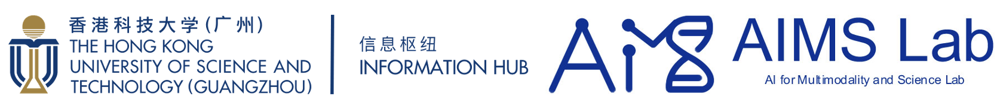
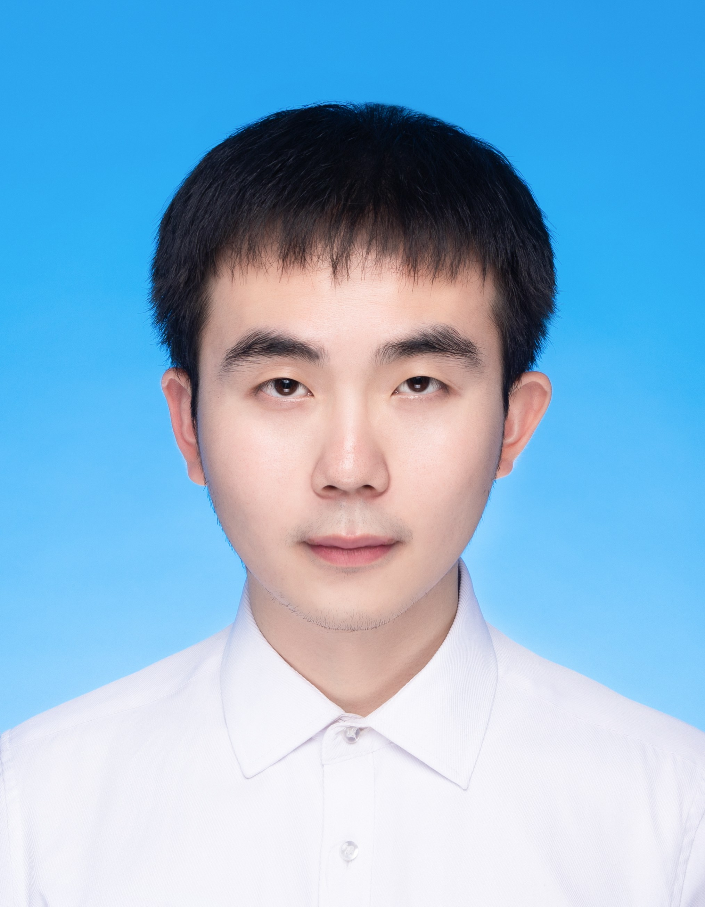
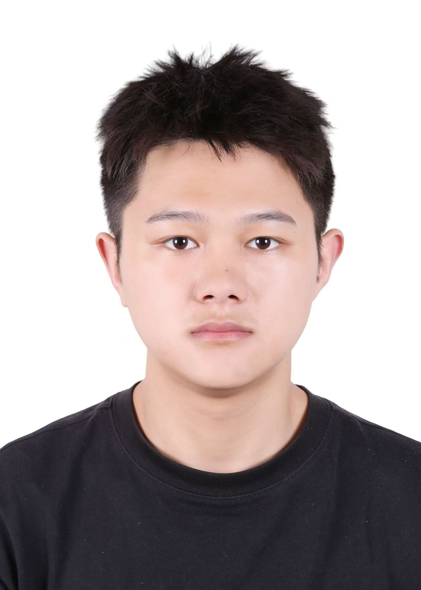
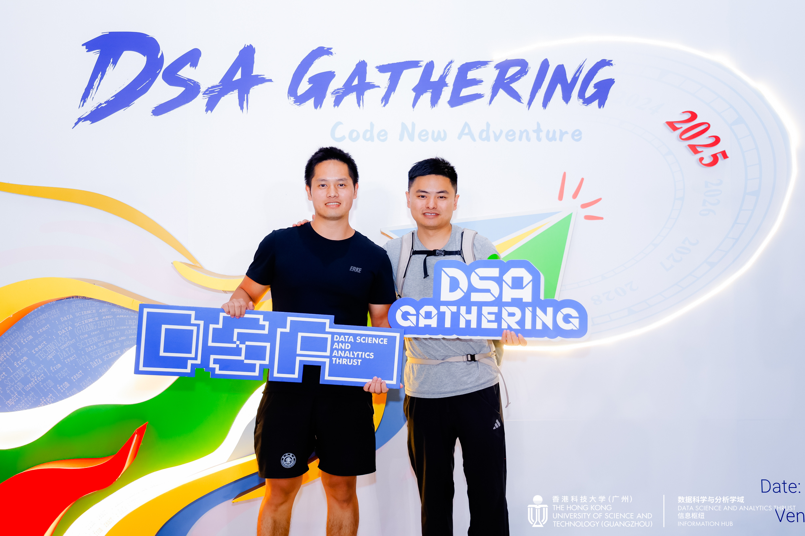

Jun Xia
Assistant Professor
Data Science and Analytics Thrust (DSA Thrust)
Information Hub
HKUST(GZ) & HKUST
Email: junxia@hkust-gz.edu.cn
Tel: (020) 88333858
Office: W4-535, HKUST(GZ)
Profile
Jun Xia is an Assistant Professor at The Hong Kong University of Science and Technology (Guangzhou), leading the AI for Multimodality and Science Lab (AIMS Lab) with research focused on Multimodal Large Models and AI for Sciences. He also holds an affiliated appointment at The Hong Kong University of Science and Technology (Clear Water Bay, Hong Kong). He received his Ph.D. from a joint program between Westlake University and Zhejiang University, advised by Chair Prof. Stan Z. Li.
🌟 Hiring: We are actively seeking visiting students, research assistant and self-motivated Ph.D. and M.Phil students. Since July 2022, almost every visiting student who worked with me has published papers at top conferences such as ICML, NeurIPS, and ICLR during their visit. If you are interested, please don't hesitate to contact me via Email.
News 
- (2026.02) Invited to serve as Area Chair of KDD AI4Science Track.
- (2026.01) Multiple papers on AI for Science are accepted by ICLR 2026, IEEE TKDE.
- (2026.01) Invited to serve as Senior Program Committee (SPC) by IJCAI 2026.
- (2026.01) One paper on Graph Neural Networks is accepted by WWW 2026.
- (2025.12) Two papers on AI4Science are accepted by AAAI 2026.
- (2025.10) Our SpectraAI research has received large-scale computing support from TeleAI, facilitating the advancement of its practical application.
- (2025.09) A paper on SpectraAI has been accepted by Nature Methods in principle.
- (2025.09) Two papers on AI4Science are accepted by NeurIPS 2025.
- (2025.09) Two papers on fundmental AI are accepted by IEEE TNNLS and Bioinformatics.
- (2025.08) Invited to serve as Area Chair for ICLR 2026 and AI4Science Workshop at NeurIPS 2025.
- (2025.05) Four papers are accepted by IJCAI 2025.
- (2025.04) Invited to serve as an Area Chair for NeurIPS 2025.
- (2025.01) Four papers on AI for Life Science are accepted in ICLR 2025.
- (2024.12) A paper on AIDD is accepted in Bioinformatics.
Selected Awards & Honors
2024: CIE-Tencent Doctoral Research Incentive Project ((首届)中国电子学会—腾讯博士生科研激励计划).
2024: Fundamental Research Project for Young Ph.D. students from NSFC (首批国家自然科学基金青年学生基础研究项目(博士生)).
2024: DAAD AINet Fellowship.
2023: Rising Star in AI (awarded by KAUST AI Initiative headed by Prof. Jürgen Schmidhuber)
2023: Apple AI/ML Scholar Finalist
2023: NeurIPS Scholar Award.
2023: Suwu Scholarship.
2023: Westlake Presidential Awards (The highest honor at Westlake Univ.).
2022: National Scholarship. 2017: National Scholarship.
Professional Service
- Area Chair (AC):
- ICLR
- NeurIPS
- KDD AI for Science Track
- AI4Science@NeurIPS 2025
- Senior Program Committee (SPC):
- IJCAI
- Program Committee Member or Reviewer:
- Conferences: ICLR, ICML, NeurIPS, CVPR, KDD, ACL, SDM, ECML, ICASSP, etc.
- Journal Reviewer: Nature Communications, IEEE TPAMI, IEEE TIP, ACM TKDD, IEEE TNNLS, Neural Networks, etc.
AIMS Lab

The AI for Multimodality and Science (AIMS) Lab focuses on cutting-edge research in multimodal AI and its applications in scientific discovery (AI for Science).
Ph.D. Students


M.Phil. Students


Lab Administrative Assistant

Visiting Students and Research Assistants
- Yunhua Zhong (PhD Student from HKU)
- Taoyong Cui (PhD Student from CUHK)
- Dongxin Lv (PhD Student from Westlake)
- Jie Yang (PhD Student from FDU)
- Zhijin Dong (MS Student from PKU)
- Yuniang Jiang (MS Student from THU)
- ChuangXin Zhao (MS Student from CAS)
- Chenming Xu (BE Student from NJU)
- Bo Liu (BE Student from JLU)
- Zhuoli Ouyang (BE Student from SUSTech)
- Ziyi Liu (BE Student from BUPT)
- Yiran Zhu (BE Student from NCEPU)
Alumni
- Sizhe Liu(Undergraduate Student from USC → MIT)
- Yue Liu (MS Student from NUDT → NUS)
- Lecheng Zhang (Undergraduate Student from Westlake → UC Berkery)
- Xiaojun Shan (Undergraduate Student from UESTC → UCSD)
- Yunhua Zhong (Undergraduate Student from NJU → HKU)
- Jiabei Cheng (PhD Student from SJTU → FDU)
- Xiao Zhu (Undergraduate Student from BUPT → HKUST(GZ))
- Chengshuai Zhao (Undergraduate Student from UC Irvine → ASU)
Research Focus
The AIMS Lab focuses on advancing research in Multimodal AI and SpectraAI (AI for Spectral Data Analysis).
Multimodal AI
Core Focus: Pre-training and Post-training techniques for multimodal large models, such as preference optimization and reasoning ablities improvements. Multimodal AI research serve as a foundational support for the advancement of SpectraAI.
SpectraAI (AI for Spectral Data Analysis)
Core Focus: Developing advanced AI models for analyzing spectral data (e.g., Mass Spectrometry, Infrared Spectroscopy, Nuclear Magnetic Resonance). As an application and extension of Multimodal AI in the field of spectral data, SpectraAI places strong emphasis on translating algorithms and models into practical use cases. The ultimate goal is to drive real-world impacts through the deployment of these technical solutions.
Below are our team's Publications
Publications
Listed by categories in reversed chronological order, where ∗ indicates equal contribution and † denotes the corresponding author.
Photos


Openings
招聘职位
我们提供多个大模型、Agent及AI for Life Science方向的研究职位，包括博士（PhD）、硕士（MPhil）、博士后（Postdoc）、研究助理（RA）和访问学者（Visiting Scholars）。
所有录取的研究生均享受全额奖学金（博士每月1.5万元，硕士每月1万元）。研究助理享受有竞争力的薪资和项目奖金。申请2026年秋季/2027年春季/2027年秋季入学的学生可以联系我们，或先申请研究助理职位。
一、博士(PhD)申请者
通常情况下，AIMS Lab博士申请者在加入实验室前，均以第一作者身份在CCF A类国际会议/期刊/Nature子刊发表过研究成果，且具备在实验室的访问实习经历。但上述条件并非硬性要求，实验室将综合评估申请者的科研潜力、学术背景、创新能力及与实验室研究方向的契合度或者经费，择优录取。
基本要求
- 对人工智能与机器学习研究抱有浓厚兴趣，具备独立思考能力，致力于产出有影响力的研究成果；
- 具备扎实的数学基础与编程能力，熟悉 Linux 系统，拥有强烈的学习意愿；
- 具备严谨的科研精神、开放的心态及良好的团队协作意识；
- 英语写作能力良好，符合香港科技大学的英语入学要求。
优先条件
申请者需满足以下至少一项条件，满足多项者将予以优先考虑：
- 具备人工智能、机器学习相关科研或项目经历，以第一作者身份在顶级会议或期刊发表过研究成果；
- 具备丰富的全栈工程师相关经验。
- 拥有企业或科研机构实习经历，对人工智能/机器学习应用有深入系统的理解，且实习期间取得突出成绩；
- 在 ACM ICPC、MCM/ICM、KDD Cup、Kaggle等竞赛中取得顶尖名次；
二、红鸟硕士项目（Redbird MPhil）申请者
AIMS Lab热烈欢迎对AI前沿研究与硬科技创业领域抱有浓厚兴趣的红鸟硕士项目申请者。尽管红鸟项目允许学生在校内自由选择导师，且实验室收到大量相关申请，但受导师精力所限，无法接纳每一位申请者。千军易得，一将难求。对于成功加入的红鸟硕士，实验室将以博士生培养标准或未来潜在创业者的成长路径进行系统化指导，提供深度科研训练与创业实践支持。详情请参考: RedBird Mphil Program
三、香港科技大学（广州）本科生
实验室欢迎港科大（广州）本科生加入进行科研实习。过往多名实习生已成功斩获 MIT、UCSD、HKU、NUS等世界顶尖高校的博士项目录取资格。针对本科生，实验室将优先安排大语言模型、智能体等前沿方向的周期较短的科研项目，全力支持学生申请校内XProgram本科生研究项目，并为表现优异的学生提供推荐信及世界名校深造推荐机会。
四、外校实习生/科研助理
AIMS Lab 面向外校本科生、硕士生、博士生开放线上/线下科研访问机会，旨在帮助申请者丰富科研经历，或为后续申请实验室PhD/MPhil项目或者外校积累竞争力。对于线下来校参与研究的实习生/科研助理，实验室将提供具有竞争力的薪资待遇。
申请须知
1. 申请方式：请将个人简历（含教育背景、发表成果、实习经历等）及代表性论文/项目材料发送至邮箱junxia@hkust-gz.edu.cn，邮件同时抄送实验室公共邮箱aimslab@hkust-gz.edu.cn；
2. 邮件主题格式：【年份-申请职位-姓名-所在院校】（例：【2027Fall-PhD-Jay Chou-THU】）；
3. 审核流程：我们将及时对所有申请进行评估，由于咨询邮件数量庞大，无法逐一回复每封邮件，敬请谅解；
4. 结果通知：通过简历筛选的申请者将收到面试邀请邮件，若一个月内未收到回复，则视为未进入下一轮；若仍有强烈意向，可在一个月后再次邮件联系。感谢您的耐心等待。
其他说明
博士后、研究助理及访问学者申请者，我们将根据个人情况单独安排线上沟通。实验室优先考虑具备人工智能与机器学习背景的申请者，不局限于学科专业。
Openings
We are offering multiple research positions in Multimodal AI, Agentic AI and its applications in life science. Positions include PhD, MPhil, Postdoc, Research Assistant (RA), and Visiting Scholars.
All admitted postgraduate students receive full scholarships (¥15K/month for PhD, ¥10K/month for MPhil). RAs receive competitive salaries and project bonuses. Students applying for Spring/Fall 2026 can contact us or apply for an RA position first. For detailed Chinese information, please refer to the AIMS Lab WeChat Official Account.
1. Redbird MPhil Applicants
AIMS Lab warmly welcomes Redbird MPhil applicants with a strong interest in cutting-edge research and hard technology entrepreneurship. Although Redbird students can freely choose supervisors on campus and the lab receives many applications, due to the PI’s limited energy, we cannot accept every applicant. Admitted students will be trained according to the standards of PhD students or potential future entrepreneurs, with in-depth research training and entrepreneurial practice support.
Redbird MPhil applicants should contact the PI first and join the Redbird MPhil Class, with the academic supervisor to be confirmed after 6 months of enrollment.
2. PhD Applicants
In general, PhD applicants to AIMS Lab are expected to have at least one first-author paper published in a CCF A conference or Nature sub-journal, and have visiting internship experience at AIMS Lab before admission. However, these are not mandatory requirements; the lab will comprehensively evaluate research potential, academic background, innovation ability, and alignment with lab research directions to select outstanding candidates.
General Requirements
- Strong interest in AI and ML research, independent thinking, and desire to produce influential results.
- Solid math and programming skills, Linux experience, and strong willingness to learn.
- Scientific research spirit, openness, and collaboration awareness.
- Good English writing skills, meeting HKUST’s English admission requirements.
Preferred Qualifications
Applicants must meet at least one of the following requirements. Priority will be given to those who meet multiple:
- Relevant AI/ML research or project experience with first-author publications in top conferences or journals.
- Internship experience in industry or research institutions with deep understanding of AI/ML applications and outstanding performance.
- Top awards in competitions such as ACM ICPC, MCM/ICM, KDD Cup, or Kaggle.
- Extensive full-stack engineering experience.
3. HKUST(GZ) Undergraduate Students
The lab welcomes HKUST(GZ) undergraduates to join for research internships. Many previous interns have been admitted to PhD programs at top universities including MIT, UCSD, HKU, and NUS. We will arrange short-term research projects on large language models and agents, support applications for the on-campus X Program, and provide strong referrals to world-class universities for outstanding students.
4. Off-Campus Interns / Research Assistants
AIMS Lab welcomes off-campus undergraduate, master’s, and PhD students for online or offline research visits to enrich research experience or strengthen applications for AIMS Lab PhD/MPhil programs. Competitive stipends are provided for on-site interns and research assistants.
Contact Info & Application Notes
1. Application: Send your CV (education, publications, internships, etc.) and representative papers/projects to junxia@hkust-gz.edu.cn, and copy the lab email: aimslab@hkust-gz.edu.cn.
2. Email Subject Format: “Year-Position-Your Name-Your Affiliation” (e.g., “2026Fall-PhD-Jay Chou-THU”).
3. Review: We will evaluate applications promptly. Due to high email volume, we may not reply to every inquiry.
4. Notification: If you pass resume screening, you will receive an interview email. If no reply within one month, you have not advanced. You may reapply after one month if still interested. Thank you for your patience.
Additional Notes
For Postdoc, RA, and Visiting Scholar applications, we will arrange online meetings individually. We prioritize applicants with AI and ML backgrounds but also welcome excellent students from biology and chemistry.
News Archive
Complete history of news and announcements.